BEFORE · AFTER대표 직접 시공


화장실
화장실 문틀 옆 큰 벽타일 위아래 2장이 세로로 갈라진 현장입니다.
전체를 뜯지 않고, 깨진 2장만 같은 결 무늬로 교체했습니다.
화장실 문을 열고 닫을 때마다 눈에 들어오는 자리, 바로 문틀 옆 벽타일입니다.
이번 현장은 그 자리 큰 벽타일 위아래 2장이 문틀을 따라 세로로 쭉 갈라진 화장실 타일 깨짐 현장이었습니다.
위쪽 타일은 모서리가 아예 떨어져 나가서 안쪽이 들여다보일 정도였습니다.
전체를 뜯지 않고, 깨진 2장만 골라 교체하는 화장실 타일 보수로 진행했습니다.
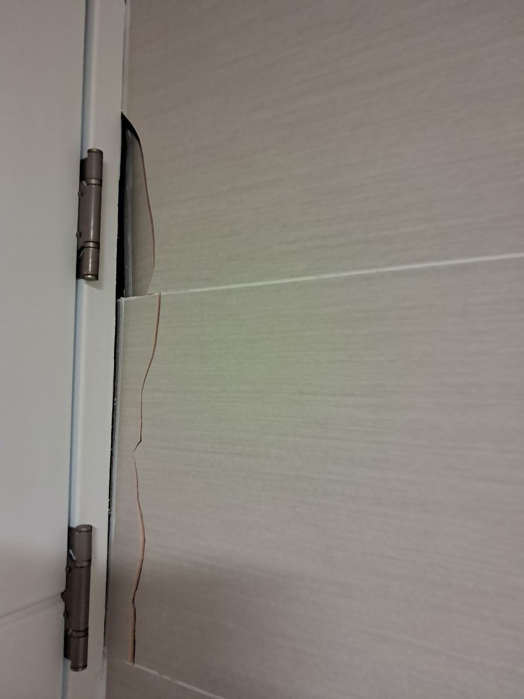
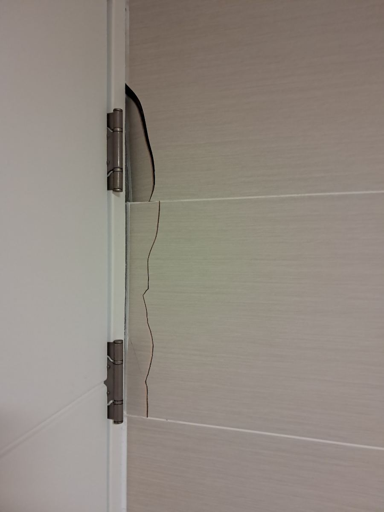
금 간 곳만 보고 바꾸면 금방 끝날 것 같지만, 옆 타일까지 같이 들떠 있으면 얼마 안 가 또 문제가 생깁니다.
그래서 타일 보수 전에 깨진 타일 주변까지 하나씩 눌러 보면서 상태를 확인합니다.
이 현장은 문틀 옆 위아래 2장만 문제였고, 나머지는 단단해서 2장만 교체하기로 했습니다.
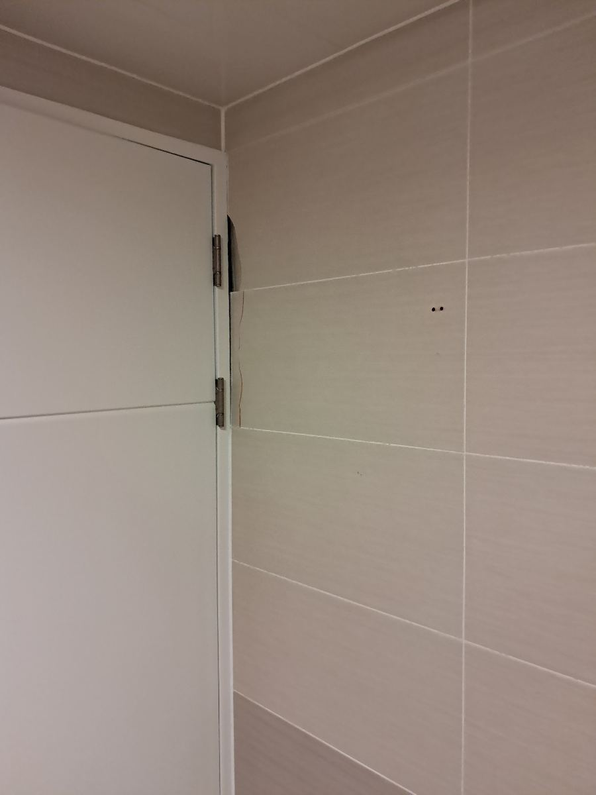
깨진 타일 보수에서 가장 조심하는 부분은 옆 타일입니다.
그래서 교체할 2장 둘레의 줄눈을 먼저 따냈습니다.
줄눈을 끊어 두지 않고 바로 떼면, 붙어 있는 옆 타일까지 같이 깨질 수 있기 때문입니다.
그다음 깨진 타일을 조금씩 떼어냈습니다.
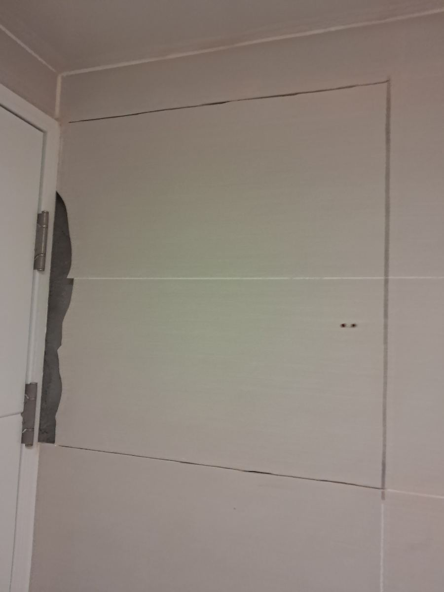
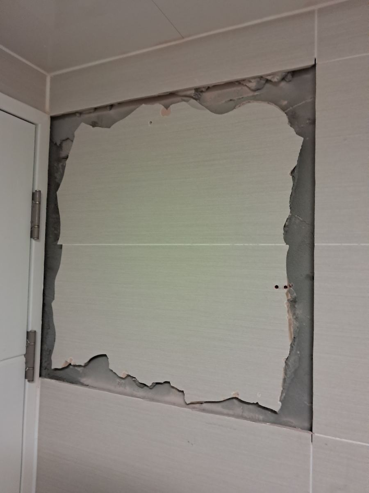
떼어 보니 타일 뒤에 시멘트가 몇 군데 덩어리로 붙어 있었습니다.
우리나라 벽타일 작업에서 많이 쓰는 '떠바리' 방식입니다.
시멘트를 떠서 타일 뒤에 덩어리로 얹어 붙이는 방법이라, 덩어리 사이에 빈 곳이 있는 것은 정상입니다.
새 타일을 옆 타일 높이에 딱 맞춰 붙이려면, 벽에 남아 있는 시멘트부터 깔끔하게 정리해야 합니다.
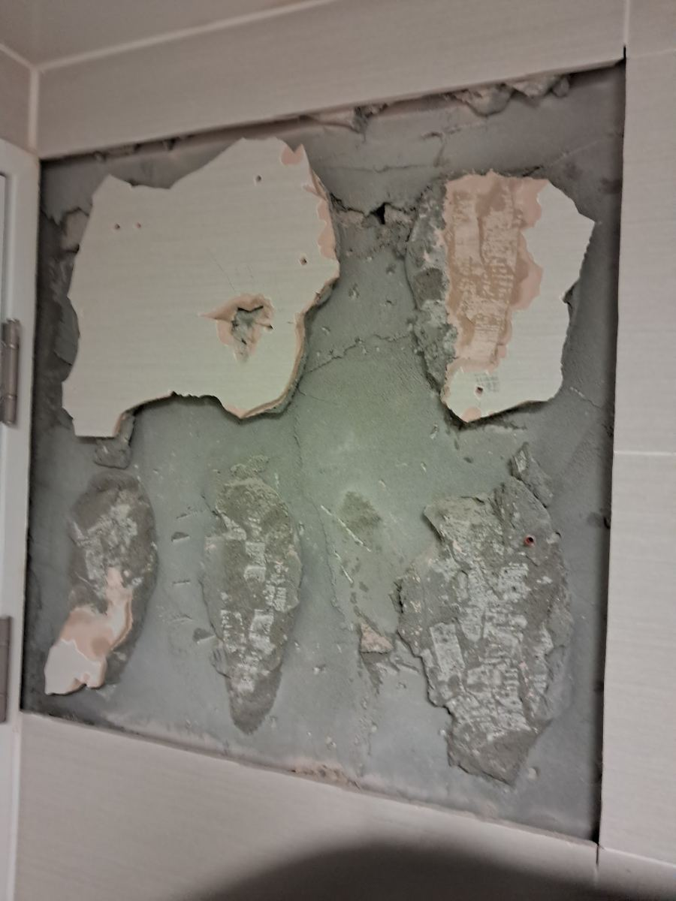
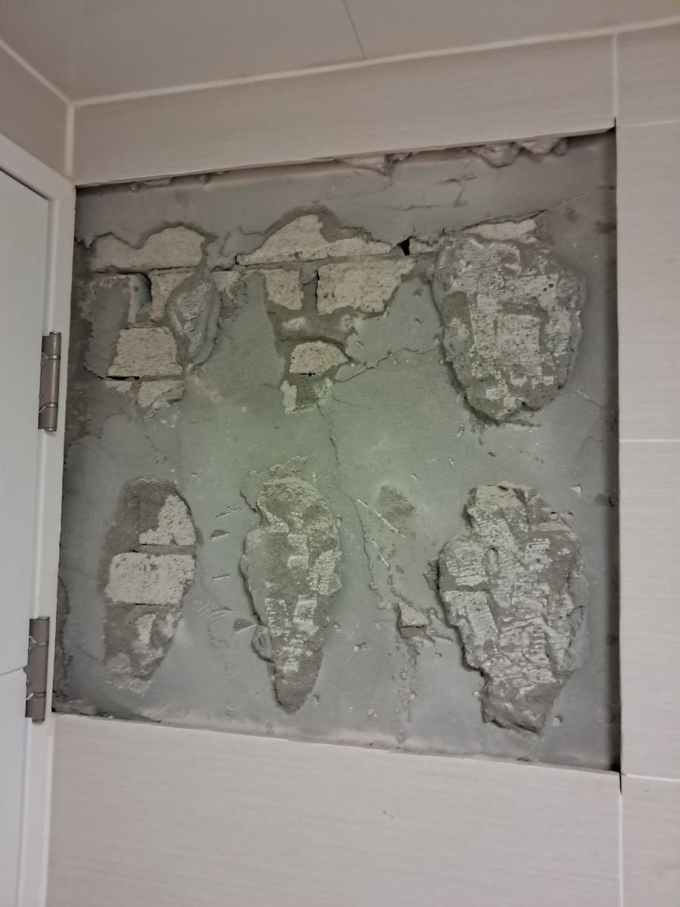
떨어진 조각과 들뜬 부분을 걷어내고 바탕을 정리한 다음 새 타일을 붙였습니다.
기존 타일과 같은 결 무늬로 맞추고, 결 방향도 옆 타일과 똑같이 놓았습니다.
붙인 뒤에는 빨간 레벨링 클립을 끼워서 옆 타일과 높이가 딱 맞게 잡아 주었습니다.
큰 타일은 살짝만 어긋나도 조명이 비치면 바로 티가 나서, 이 부분을 가장 꼼꼼하게 봅니다.
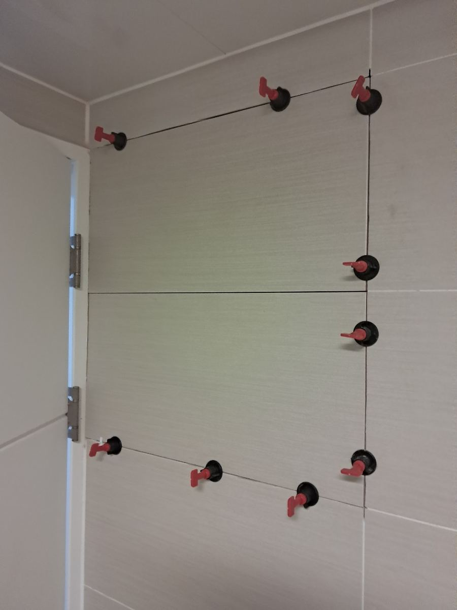
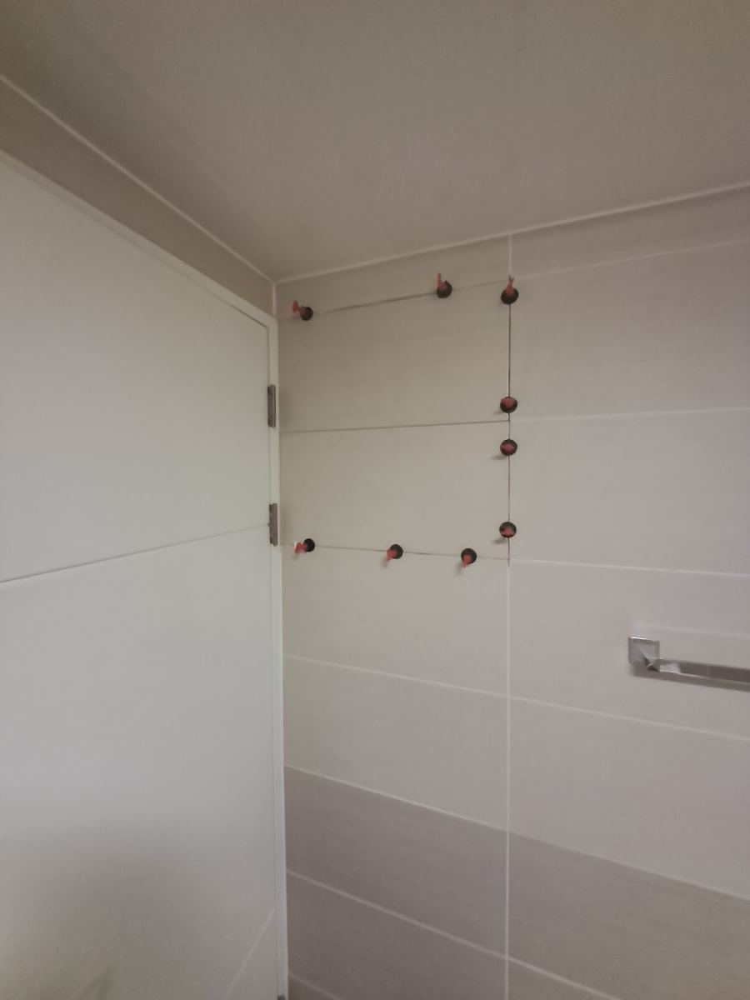
클립을 빼고 주변과 같은 흰색 줄눈으로 채운 뒤 깨끗하게 닦아 냈습니다.
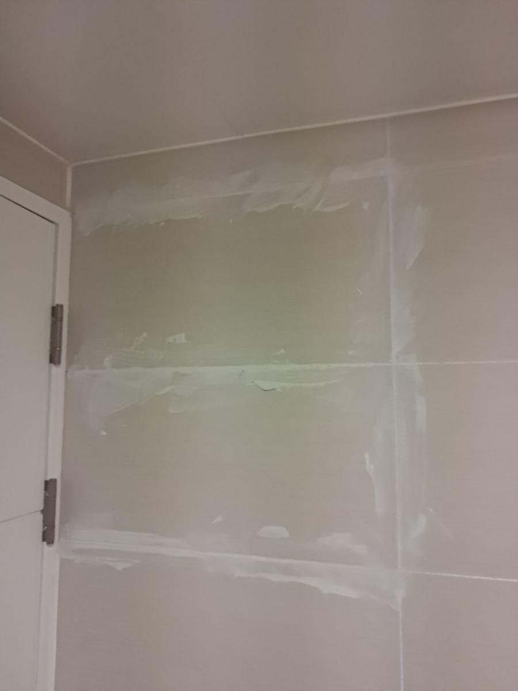
어디를 바꿨는지 찾기 어려울 만큼 자연스럽게 맞춰졌습니다.
문 옆이 깔끔해지니 화장실 전체가 한결 정돈돼 보입니다.
이번 화장실 타일 보수는 깨진 2장만 교체하는 것으로 마무리했습니다.
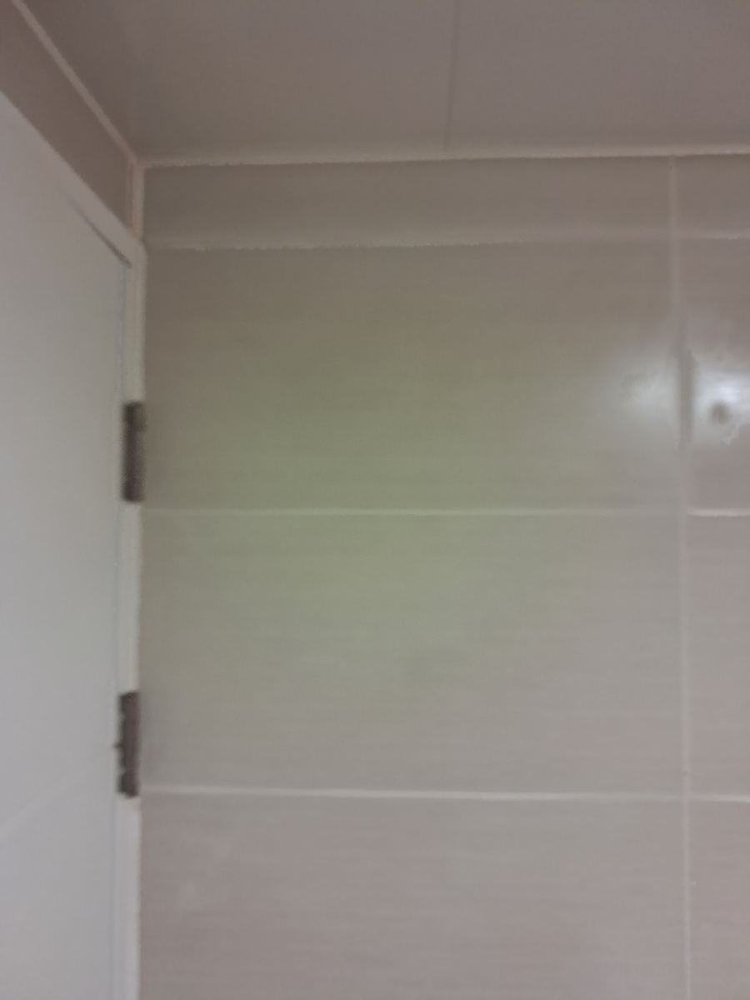
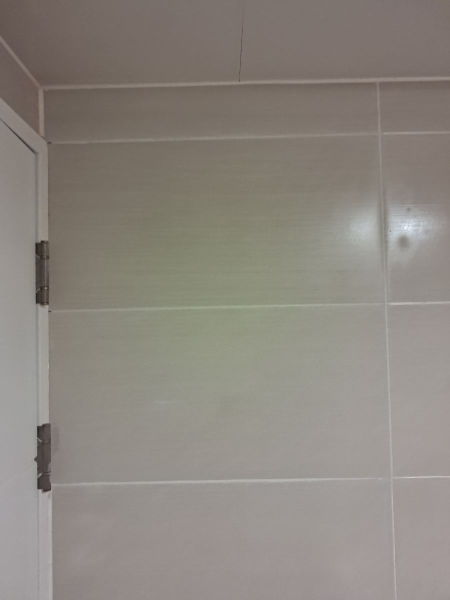
주변 타일이 단단히 붙어 있으면 문제 있는 장만 교체해도 됩니다.
화장실 타일 깨짐이 한두 장이라면 전체 공사 없이 부분 보수로 해결할 수 있습니다.
다만 옆 타일까지 들떠 있으면 같이 손봐야 해서, 작업 전에 꼭 확인합니다.
같은 타일은 아파트·빌라 관리사무소나 댁에 따로 보관해 둔 타일이 있을 때만 쓸 수 있습니다.
보관해 둔 타일이 없으면 같은 타일은 구할 수 없어서, 거래처를 통해 최대한 비슷한 타일을 찾아 맞춥니다.
이 현장은 화장실 타일 교체 2장에 3시간 정도 걸렸습니다.
위치나 상태에 따라 달라질 수 있습니다.
문 옆 타일을 가끔 가까이서 한 번씩 살펴보시기 바랍니다.
가는 금이 보이거나, 줄눈이 벌어졌거나, 타일 모서리가 살짝 튀어나와 있으면 미리 손보는 것이 좋습니다.
크게 깨지기 전에 사진 한 장 보내 주시면, 깨진 타일 보수도 번지기 전에 작게 끝낼 수 있습니다.
대표인 제가 직접 상담하고 시공까지 합니다.
타일 한 장이라도 위치와 주변 상황에 따라 난이도가 달라 비용이 달라집니다.
사진을 보내주시면 꼼꼼히 보고 최대한 바로 견적을 드리고, 사진으로 어려우면 직접 방문해서라도 최소 견적을 맞춰드립니다.
📞 010-2900-8802 (문자로 사진을 보내주시면 됩니다) - 파파장스
문제 있는 타일 1장, 주변이 다 같이 보이게 넓게 찍은 사진 1장이면 충분합니다.